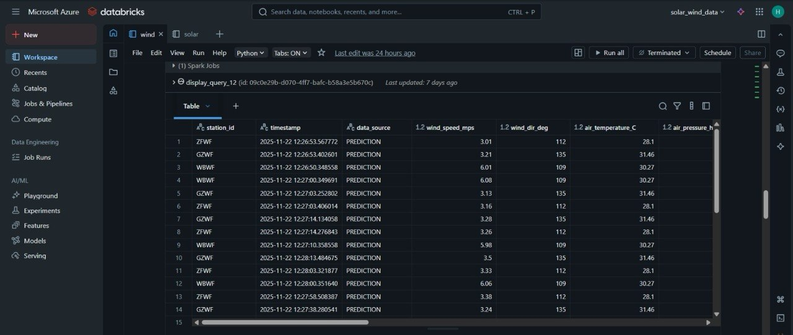
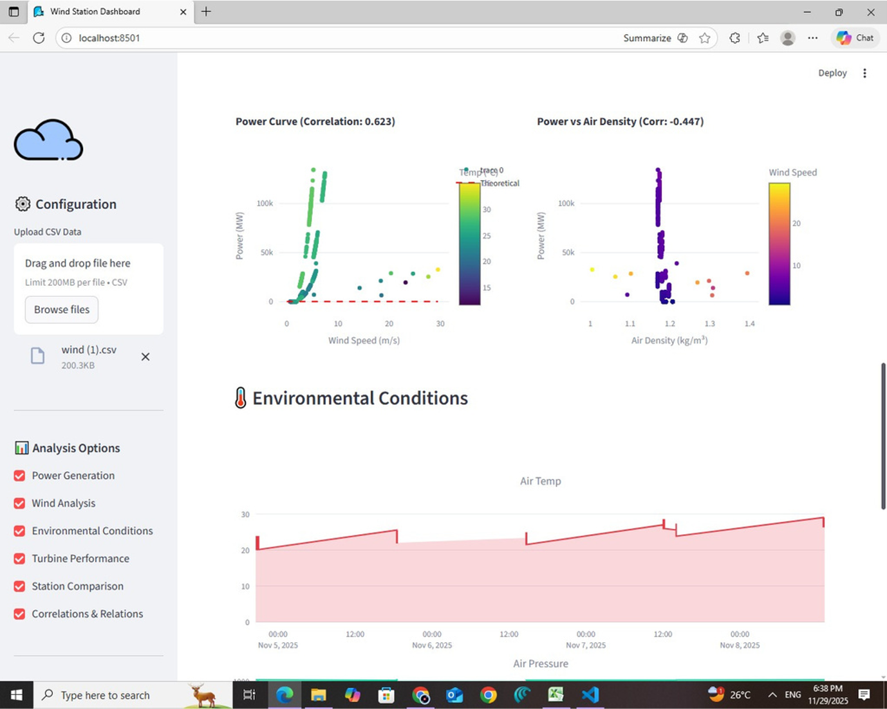
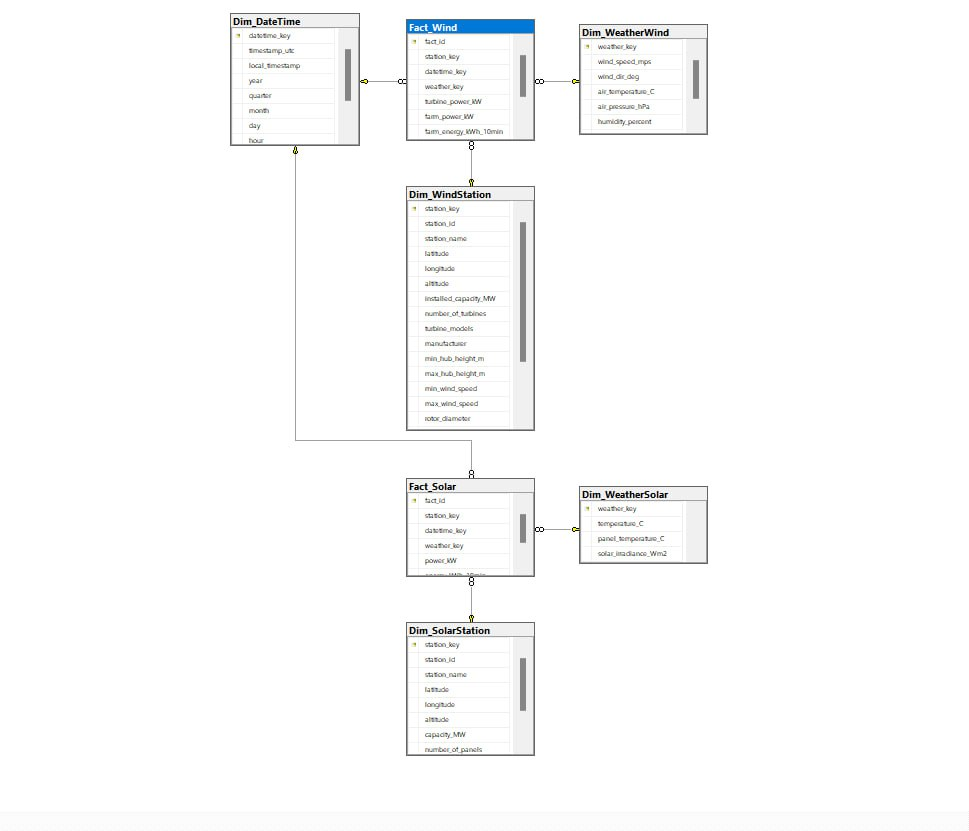

graduation project · nov 2025
Real-Time Renewable Energy Data Platform
The Challenge: Wind and solar output isn't constant: it swings with the weather. Without visibility into those swings, operators can't proactively adjust operations, schedule maintenance, or balance load across sites, leaving renewable capacity underutilized.
What I Built: This platform monitors three wind farms and three solar farms in real time, pulling live weather data (wind speed, solar irradiance, temperature) to predict expected energy output at each site. By correlating weather patterns with production data, it surfaces insights into upcoming high- or low-production windows so operators can make informed decisions rather than finding out after the fact. I owned the on-premise architecture (driving Spark-transformed data through automated SSIS packages into a SQL Server data warehouse) and was responsible for the Solar Azure pipeline.
Problem Source
Weather API polled every 10 min; a multi-threaded Python simulation script emulates 5-second telemetry required for real-time models without throttling.
Live 5-second weather telemetry simulation stream.
ETL & Transformation
Event Hubs ingests the stream; PySpark on Databricks transforms raw feeds into clean Delta Lake layers before automated SSIS packaging.

Databricks PySpark to Delta Lake pipeline flow.
Business Impact
Clean data lands in the data lake; on-premise pipeline moves it via SSIS into a SQL Server warehouse for instant power output forecasting.



Real-time forecasting dashboard, analytics visual & DB schema. (Swipe / tap to explore)